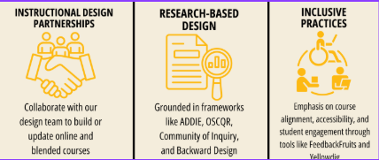

Course Development
We partner with faculty to create engaging, high-quality online and blended courses that reflect best practices in instructional design and learning theory. Whether you're developing a brand new course or refreshing an existing one, our team is here to support you—every step of the way.
What We Offer
We coordinate and support course design for online and hybrid delivery at FHSU. Our 16-week development pathway emphasizes collaboration, instructional design theory, and high-impact practices.
Theoretical Models & Standards We Follow
- Community of Inquiry Framework
- OSCQR Review Rubric Website
- Backward Design Model
- ADDIE & Inclusive ADDIE Model
- Course Alignment Strategies
- Open Education Resources | COIL
Our Pathway
(Faculty can choose based on time and course goals.)
- 16-week structured timeline
- Customized support
- Contract and milestone-based